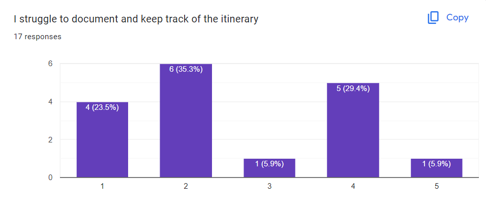
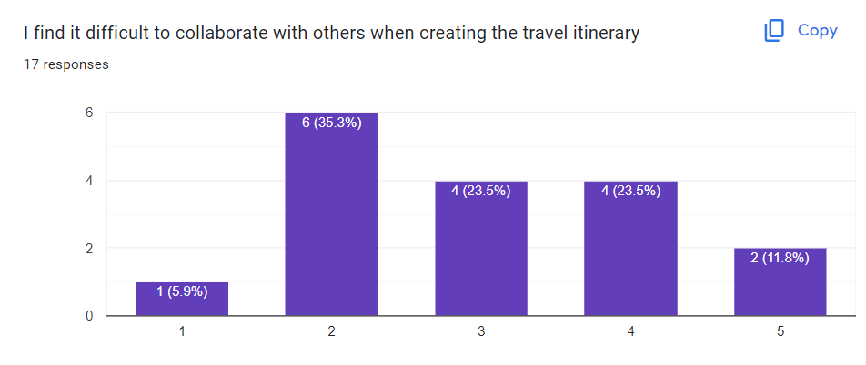
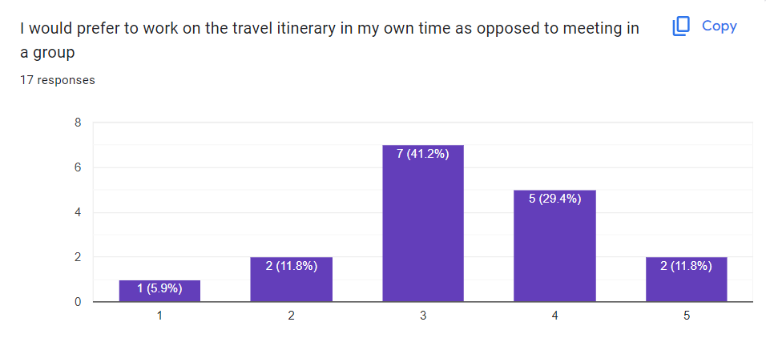

Research
In designing a mobile app to help people plan their next trip, the first step of the design process was to conduct research to uncover the pain points people experienced when planning their trips.
The aim of the research would be to first identify key problems that people experienced, before being able to ideate possible solutions in the form of a mobile app.
I utilised both qualitative and quantitative research methods in order to achieve this, with the summary of my research displayed below.
Interviews
I conducted 5 one-to-one interviews with users who have all traveled within the past year.
I collated the data onto sticky notes, and then categorized the data through an affinity diagram to get a better picture of the data collected.
I collated the data onto sticky notes, and then categorized the data through an affinity diagram to get a better picture of the data collected.

Surveys
I also conducted a survey which was completed by 17 participants, with all users having traveled overseas previously.
Some of the key findings are displayed on the graphs below (horizontal scale from 1 to 5 represents Strongly Disagree (1) to Strongly Agree (5)).
Some of the key findings are displayed on the graphs below (horizontal scale from 1 to 5 represents Strongly Disagree (1) to Strongly Agree (5)).

8 out of 17 respondents (47%) report they feel overwhelmed by the number of options when planning for trips.

9 out of 17 respondents (53%) report they struggle to fit everything they want to do in their itinerary.

12 out of 17 respondents (71%) report they have found it difficult to accomodate to everyone's preferences whilst traveling.